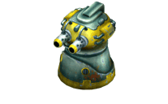
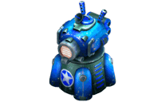
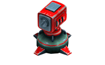
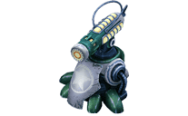

13 |
Les types de tours |
 |
|
Que serait un « tower defense » sans tours ? 4 types de tours sont disponibles offrant chacun des degrés de puissance et des coûts différents.
Le mode Histoire vous permet de débloquer des tours au fur et à mesure que vous progressez dans le jeu tandis que le mode Survie (Survival) donne accès à toutes les tours. |
||||||||||

Le canon de base (Basic Cannon) Thermidoom est doté de balles capables de transpercer les robots. Il peut également être remplacé par un canon automatique (Auto Cannon) doté de tirs plus rapides ou par un fusil de précision (Sniper Cannon) offrant une portée supérieure mais des tirs plus lents. |
||||||||||

Le fusil EMP (EMP Cannon) provoque une explosion d’énergie capable de faire fondre la plus coriace des compagnies de castors. L’EMP peut également provoquer de plus violentes explosions ou être remplacé par un DEAR qui permet de transformer temporairement une cible en appareil électroménager, notamment en grille-pain ! |
||||||||||

Le lance-roquettes (Missile Launcher) de base permet de lancer un puissant missile téléguidé et peut être remplacé par un SMART capable de suivre plus d’un ennemi à la fois. Quant aux SWARMs, ils permettent de lancer plusieurs missiles à la fois ! |
||||||||||

La tour de lasers est l’arme la plus puissante (et la plus coûteuse !) du jeu. Les lasers sont efficaces contre le métal permettant d’enchaîner les cibles les unes aux autres. Plus la cible est lointaine moins les dégâts de lasers sont importants. |
 |
 |
 |